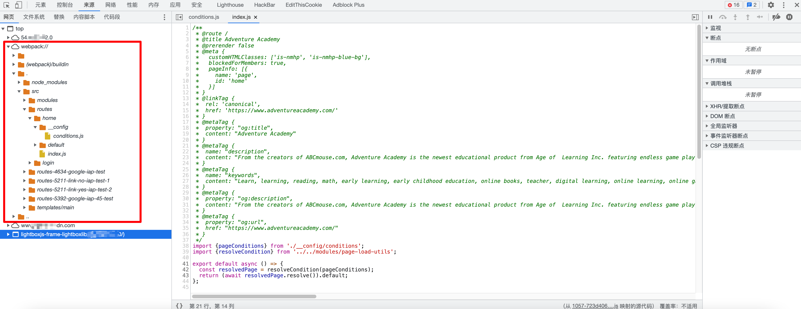
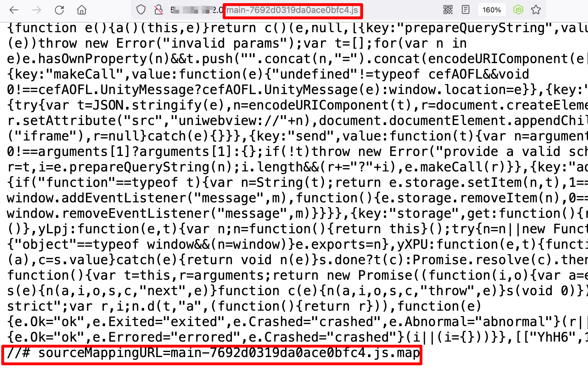
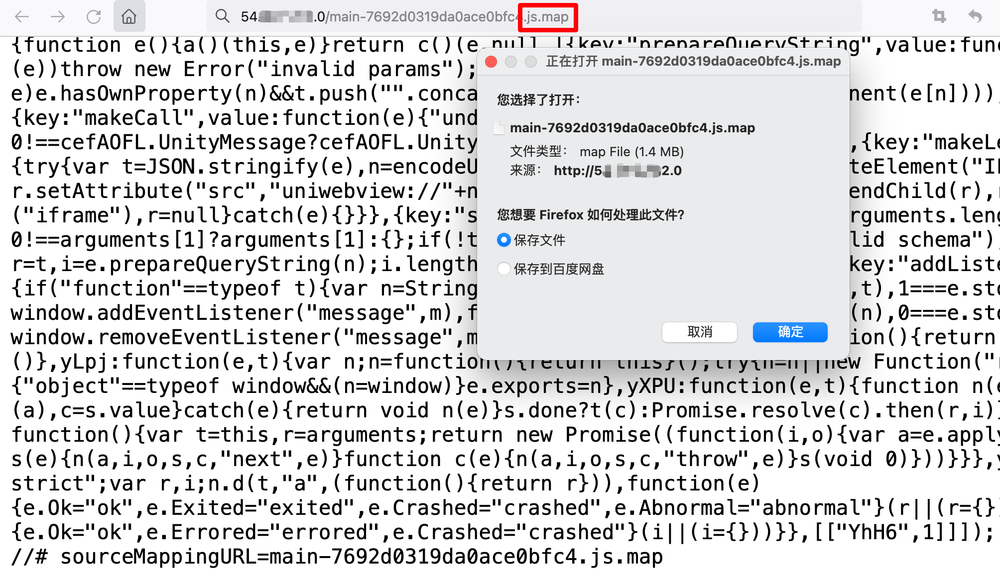

信息泄露
目录
BIGIP f5 泄漏真实ip
响应包的set-cookie处可能会泄漏ip
set-cookie:BIGipServerPOOL_web=182354092.20480.0000
exp:https://github.com/sgtalpha/BigIPCookie
python ipCookie.py -c 574728384.20480.0000
druid
swagger
swagger 会泄漏api，可以水水report或者把api拿着接着测
/v1/swagger.json
/v2/swagger.json
/v2/api-docs
webpack
大部分Vue等应用项目会使用Webpack进行打包，如果没有正确配置，就会导致项目源码泄露，可能泄露的各种信息如API、加密算法、管理员邮箱、内部功能等等。
可以水水report
Webpack项目源码在泄漏的情况下，可以在浏览器控制台中的Sources—> Page—> Webpack://中查看源代码。

使用Webpack打包应用程序会在网站js同目录下生成js.map文件。
在JavaScript上线之前，通常会进行代码压缩和混淆，以增加代码的安全性和减少代码的大小。代码压缩会删除不必要的空格、换行符和注释，从而减小文件大小。代码混淆则会将变量名、函数名和其他标识符重命名为无意义的字符，使代码更难以理解和逆向工程。
.map文件的作用：项目打包后，代码都是经过压缩加密的，如果运行时报错，输出的错误信息无法准确得知是哪里的代码报错。 有了map就可以像未加密的代码一样，准确的输出是哪一行哪一列有错。
直接查看网站的js文件，可以在末尾处有js.map文件名。

可以直接访问获得源码

插件chrome
git clone https://github.com/LuckyZmj/SourceDetector-dist
打开谷歌浏览器扩展程序的开发者模式，加载已解压的扩展程序，选中插件项目中的dist目录即可安装插件。
地图key泄漏
网址中可能会泄漏各大网络地图api的key值。
测试key可用性的url如下
高德webapi：https://restapi.amap.com/v3/direction/walking?origin=116.434307,39.90909\&destination=116.434446,39.90816\&key=这里写key
高德jsapi：https://restapi.amap.com/v3/geocode/regeo?key=这里写key\&s=rsv3\&location=116.434446,39.90816\&callback=jsonp_258885_\&platform=JS
高德小程序定位：https://restapi.amap.com/v3/geocode/regeo?key=这里写key\&location=117.19674%2C39.14784\&extensions=all\&s=rsx\&platform=WXJS\&appname=c589cf63f592ac13bcab35f8cd18f495\&sdkversion=1.2.0\&logversion=2.0
百度webapi：https://api.map.baidu.com/place/v2/search?query=ATM机\&tag=银行\®ion=北京\&output=json\&ak=这里写key
百度webapiIOS版：https://api.map.baidu.com/place/v2/search?query=ATM机\&tag=银行\®ion=北京\&output=json\&ak=这里写key=iPhone7%2C2\&mcode=com.didapinche.taxi\&os=12.5.6
腾讯webapi： https://apis.map.qq.com/ws/place/v1/search?keyword=酒店\&boundary=nearby(39.908491,116.374328,1000)\&key=这里写key